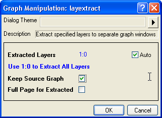

Im Gegensatz zum Zusammenfügen von Layern in einer Grafik wird die Funktion In Grafiken extrahieren verwendet, um Layer in Diagramme zu extrahieren.

Dieser Dialog kann auf drei verschiedene Weisen geöffnet werden:
Weitere Einzelheiten zu diesem Dialog finden Sie auf dieser XF-Seite.